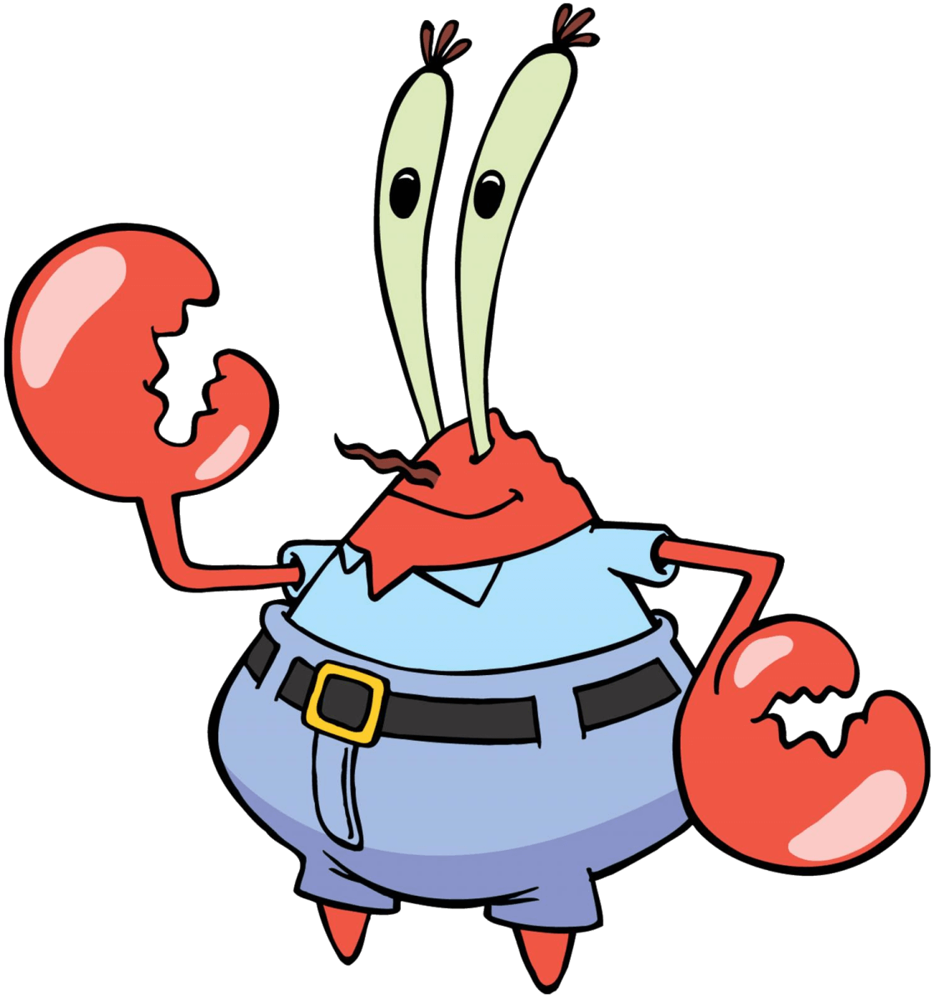

 Krabs, mejor conocido como Don Cangrejo y es dueño del restaurante más exitoso de Fondo de Bikini: El crustáceo Cascarudo. Don Cangejo es gruñón y tacaño. Lo más importante para él es el dinero y siempre está buscando la forma de obtenerlo. Su avaricia le ha traído varios problemas, a tal grado de mantenerlo solitario.